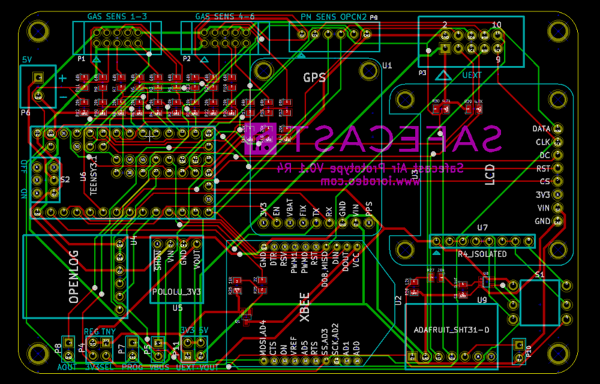

Notes on changes to version r4¶
Below is a layout image for the most recent board (ver 0.1 rev 4).

Safecast V0.1 R4 Change notes¶
- Removed header for Amphenol/Shinyei particle sensor. Note, this type of sensor could still be connected to the UEXT header if someone wants to use this type of sensor - we just removed the dedicated header for this.
- Disconnected pin D33. This pin can be problematic if state can’t be guaranteed at Teensy start up. This pin was used for SPI CS line on UEXT and wifly/XBEE/Lora header. New version is now using pin D32 for the CS line.
- Added on-board temperature and humidity sensor (I2C). This way the device will always have temperature and humidity regardless of sensor configuration (single sensor, multi-sensor, etc). In previous versions the only temperature sensors were on the gas sensor adaptor boards - so the device only had temperature measurements when the gas sensors were connected.
- Added mosfet switch for controlling power to wifly/XBEE using IO pin on the Teensy. This way the Teensy can toggle the power to the Wifly if it detects that there is an issue e.g. it is unresponsive.
- Replaced some of the existing through-hole components - resistors, capacitors - with surface mount components. This makes layout easier. Used the larger of the surface mount packages e.g. SM0805.
- Added the Safecast logo to the silkscreen (back).